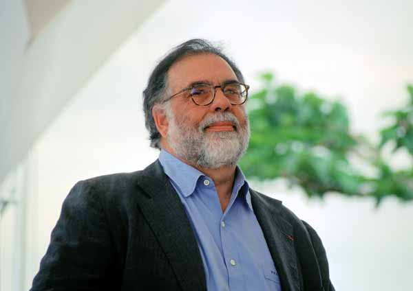
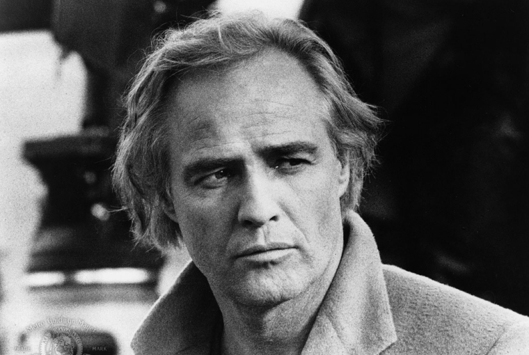
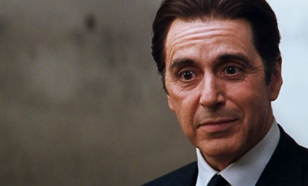

Baba, 40’lar ve 50’lerin Amerika’sında, bir İtalyan mafya ailesinin destansı öyküsünü konu alıyor. Don Corleone’nin kızı Connie’nin düğününde, ailenin en küçük oğlu ve bir savaş gazisi olan Michael babasıyla barışır. Bir suikast girişimi, Don’u artık işleri yönetemeyecek duruma düşürünce, ailenin başına Michael ve ağabeyi Sonny geçer. Danışmanları Tom Hagen’in de yardımlarıyla diğer ailelere savaş açan Corleone ailesi, eski moda yöntemleri de değiştirmeye başlar. Mario Puzo’nun çok satan kitabından Puzo ve yönetmen Francis Ford Coppola tarafından sinemaya uyarlanan film o yıl En İyi Film, En İyi Erkek Oyuncu ve En İyi Uyarlama Senaryo dallarında Oscar kazanmıştır. Yapılan araştırmalar sonucu Türkiye'de en fazla izlenen ve satılan film olma özelliği de taşır.
Yönetmen

7 Nisan 1939’da Detroit, Michigan’da dünyaya gelen efsane yönetmen İtalyan asıllıdır. Büyük bir kitle tarafında Dünya’nın en iyi filmi olarak nitelendirilen klasik film The Godfather’ın yönetmeni olarak bilinir. Ünlü oyuncu Nicholas Cage'in amcası olan yönetmen, üniversitede sinema dalında eğitim gördü. Mezun olduktan sonra ise senaryo yazmaya başladı. Kısa bir süre sonra Patton filminin senaryosuyla ilk Oscar ödülünü kazandı. 1972'de kendi yapım şirketini kurdu ve 1972'de kült film The Godfather'ı (Baba)çekti. Baba ve devam filmi Baba 2, gelmiş geçmiş en iyi filmlerden sayılır. 1970'lerin en ünlü yönetmenlerinden oldu ve Vietnam Savaşı'nı konu edinen dramatik, irkiltici filmi Apocalypse Now (Kıyamet, 1979) ile iyice ünlendi ve yerini sağlamlaştırdı.
Francis Ford Coppola
Baş Rol

En büyük oğlu kızkardeşinin sevgilisini öldürdü, kızı Cheyenne intihara kalkıştı, 96-98 arasında çevirdiği filmler gişelerde başarısız oldu ama o hala sinemanın efsanesi. Çünkü, beyaz bisiklet yakalı fanilayla ilk o çıktı ekrana, deri ceketiyle motosikleti üzerinde ‘asi gençliği’ hakkıyla ilk o oynadı. Yıllar geçti, çok az konuşsa da görüntüsü perdeyi öylesine dolduruyor, öylesine etkili duruyordu ki, mafya babasını oynadığı “The Godfather / Baba” filminden sonra hep “Baba” olarak anılmaya başlandı.
Marlon Brando

Alfredo James Pacino, 25 Nisan 1940 yılında New York,ABD'de doğdu. Hollywood'un baş aktörlerinden olan Pacino, genç yaşta oyunculuk eğitimi almaya başladı ve pek çok oyunda ödüller de kazanarak yer aldı. Broadway'de sahneye çıktığı ilk oyun Does the Tiger Wear a Necktie? ile Tony Ödülü'nün sahibi oldu. Kariyerindeki ilk filmi, 1969 yılında çevirdiği Me, Natalie oldu. Bu filmdeki performansı ile yapımcılığını Paramount'un üstlendiği, Francis Ford Coppola'nın efsane The Godfather (Baba) filminde Michael Corleone rolünü oynamaya hak kazandı. Bu filmdeki performansı ile En İyi Yardımcı Erkek Oyuncu Oscar'ına aday gösterildi ve dünya çapında hızlıca üne kavuştu.
Al Pacino